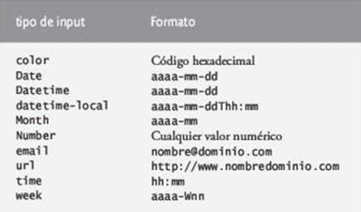

- El tipo input color (pag. 80) permite al usuario introducir un color.
- La mayoria de los navegadores despliegan el tipo input color como un campo de texto en donde el usuario puede introducir un codigo hexadecimal.
- En el futuro, cuando el usuario haga clic sobre un tipo input color, es probable que los navegadores muestren un cuadro de dialogo en donde el usuario podra elegir un color.
- El atributo autofocus (pag. 80), que puede usarse solo en un elemento input de un formulario, coloca el cursor en el campo de texto despues de que se carga el navegador y despliega la pagina. No necesitamos incluir el elemento autofocus en nuestros formularios.
- Los nuevos tipos input de HTML5 tienen validacion automatica del lado del cliente, con lo cual se elimina la necesidad de agregar codigo de JavaScript para validar la entrada del usuario y reducir la cantidad de datos incorrectos que se envian.
- Cuando un usuario introduce datos en un formulario y luego lo envia, el navegador verifica de inmediato si los datos son correctos.
- Si desea anular la validacion, puede agregar el atributo formnovalidate (pag. 82) al tipo input submit.
- Mediante el uso de JavaScript es posible personalizar el proceso de validacion.
